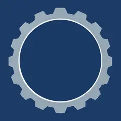
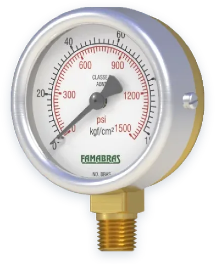
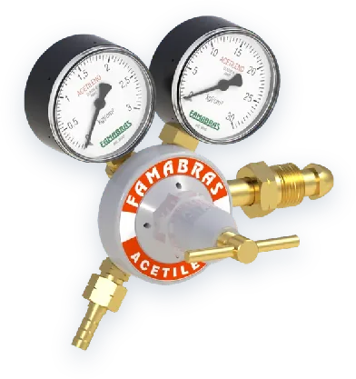
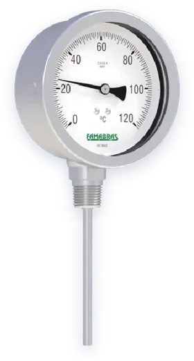
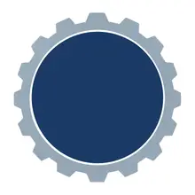

Precisão que gera confiança.
Manômetros, termômetros, reguladores, maçaricos e equipamentos para extração de chopp, com os acessórios para instalar cada um.




Glemerson + GrazielaA G&G nasceu dentro de casa. É uma empresa de família, fundada por Glemerson e Graziela, marido e mulher, juntos há mais de vinte anos.
Glemerson traz mais de trinta anos de experiência em instrumentação industrial: transmissores, malhas de controle, calibração e o dia a dia de uma planta que não pode parar. Graziela é a sócia que caminha ao lado em cada decisão da empresa.
Nosso símbolo é a união das iniciais dos dois: duas letras G, uma apoiada na outra, dentro de um instrumento de medição. Aqui você não fala com uma central anônima. Fala com quem faz o serviço e responde pelo próprio nome.
Garantir medições precisas e confiáveis para a indústria, com instrumentação, calibração e manutenção feitas com rigor técnico, atendimento próximo e entregas eficientes, ajudando nossos clientes a operar com segurança, economia de recursos e menor impacto ao meio ambiente.
Ser reconhecida como referência na área, unindo conhecimento, experiência e cuidado com o meio ambiente, e mostrar que precisão, confiança e responsabilidade ambiental caminham juntas.
Cada medição é uma decisão do cliente. Ajustamos e conferimos até o número estar certo.
Cumprimos o que prometemos, com transparência em prazos, laudos e preços.
Medição correta evita vazamento, desperdício e emissão.
Entregas no prazo, com o menor tempo de parada possível na sua operação.
Atendimento direto e técnico, de quem conhece o equipamento e o cliente pelo nome.
Experiência sempre atualizada com normas, tecnologias e boas práticas.
Diga o que você precisa medir ou controlar, o fluido e onde vai instalar. Respondemos com o produto certo e o preço.